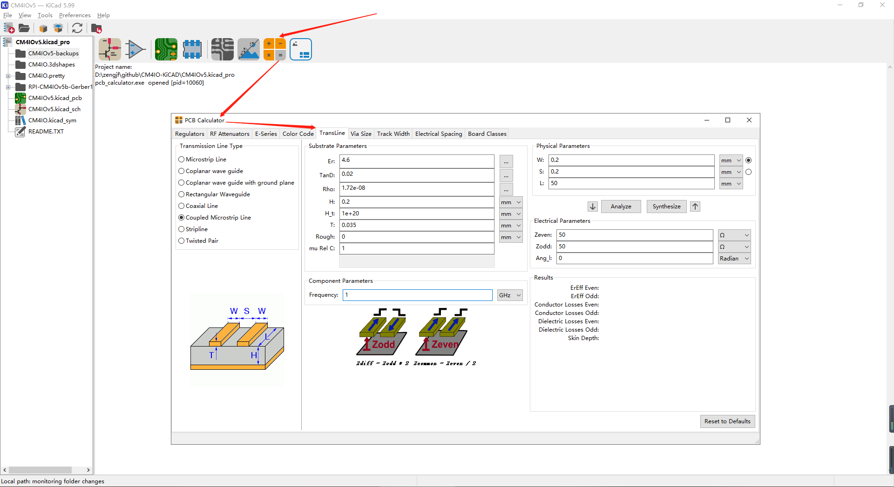
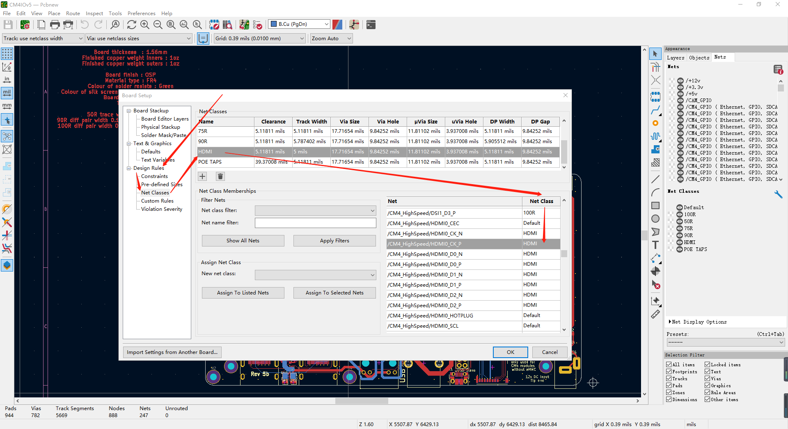
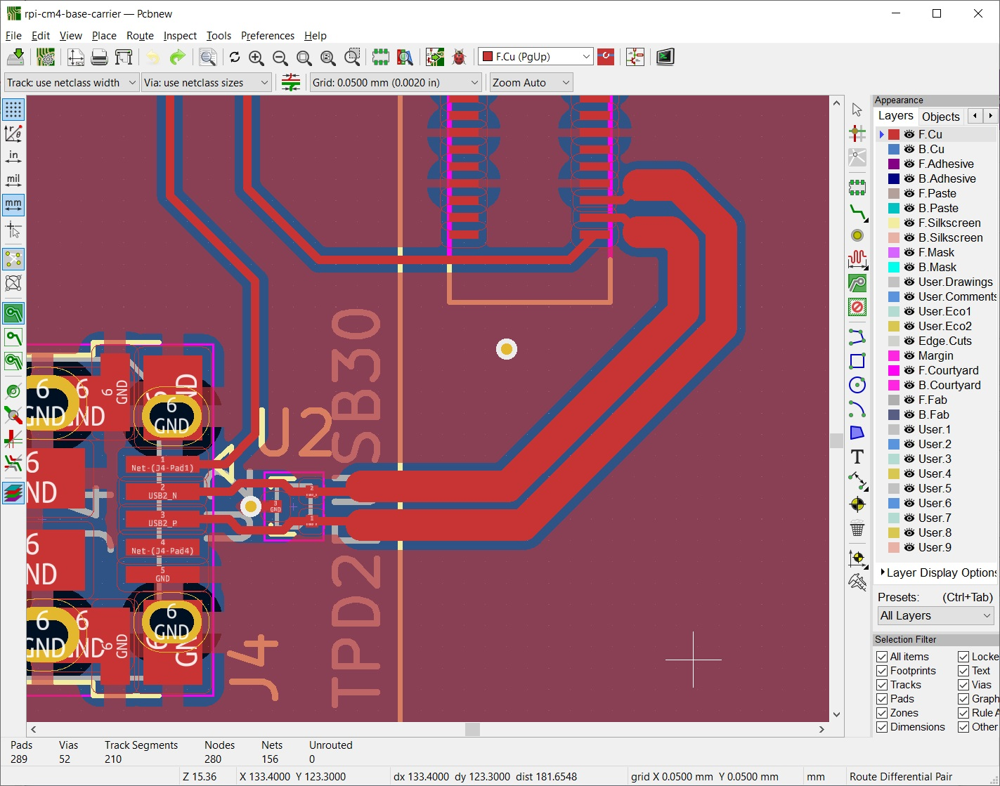
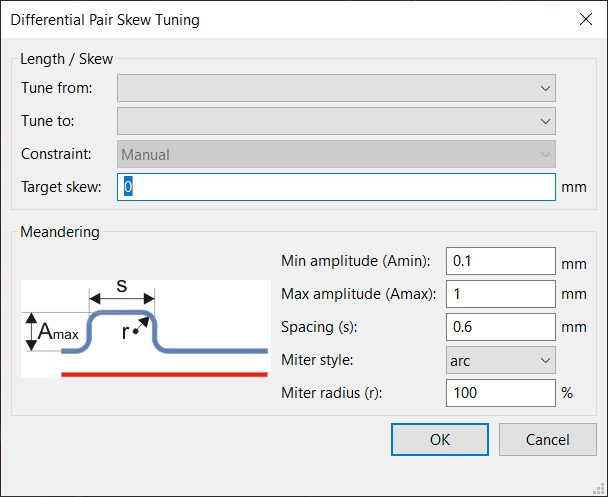
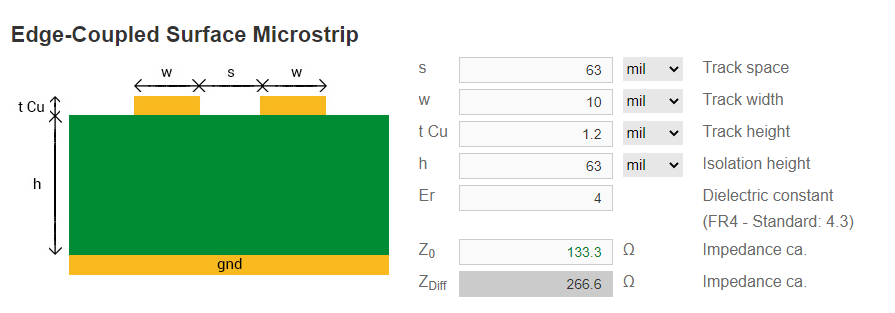

KiCad Route Differential Pairs
差分对阻抗线计算、设置、等长大体怎么处理
参考文档
KiCad阻抗计算器
[Tools] -> [Calculator Tools] -> [TransLine]

Substrate Parameters section
Er (dielectric constant): 4.5
介电常数
TanD (dielectric loss factor): 0.02
介电损耗因子
Rho (conductor’s specific resistance): 1.72e-08
导体的电阻率
H (distance between traces and bottom ground plane): 1.6 mm (board thickness)
迹线与底部接地平面之间的距离
H_t (distance between traces and top ground plane): 10000 mm (we want this to be large to approximate infinity, as we are using an external layer for our differential pair–set this to the FR4 thickness if you are routing your USB lines on an internal layer sandwiched between two ground planes)
迹线与顶部接地平面之间的距离
T (copper thickness): 0.03556 mm (corresponds to 1 oz. copper)
铜厚
Rough (roughness of surface): 0 (not needed for our calculations)
表面粗糙度
mu Rel C (relative permeability of conductor): 1 (not needed for our calculations)
导体的相对磁导率
Physical Parameters section
the smallest possible distance between the traces (S) for your differential pair, as this will help keep trace width down.
没看懂什么意思
modify the trace width (W) until you achieve the desired differential impedance.
trace length (L) is not important for what we’re looking for in this case.
Zdiff (differential impedance) is equal to 2 * Zodd, so a Zodd of 45 Ω gives us a Zdiff of 90 Ω.
设置差分对
[File] -> [Board Setup] -> [Design Rules] -> [Net Classes]

差分对布线
because the footprint pads are so small, we need to route away from the pads first before using the differential pair tool.
由于芯片引脚宽度可能小于差分对线宽，所以要先将线引到合适的地方，再用差分对信号线宽布线，貌似这个只能这样处理，和引脚同样宽；
if the differential pair widths are too large for the end component’s pads, use single-track routing with a custom width to bring the traces in to connect to the pads.
在差分线的末尾，也会遇到同样的引脚线宽和差分对线宽不吻合问题，同上处理；
如下图所示，可以看到起始引脚、差分线、终端引脚走线方式：

差分对长度匹配
For high-speed buses, you almost always want the bits on each bus line to arrive at their destination at the same time (or as close as possible to the same time). If traces are different lengths, bits may arrive at different times!
[Route] -> [Tune Skew of a differential pair] -> 选择需要修改的线 -> [右键] -> [Length Tuning Settings…]

阻抗板参数分析
Board thickness : 1.56mm
Finished copper weight inners : 1oz
Finished copper weight outers : 1oz
Board finish : OSP
Material type : FR4
Colour of solder resists : Green
Colour of silk screens : White Only on the top side
Board to : UL94-V0
TG >=130
50R trace width 0.13mm@ 3GHz
90R diff pair width 0.147 spacing 0.253mm @ 2.5GHz
100R diff pair width 0.127 spacing 0.253mm @ 2GHz
参考文档：嘉立创工艺参数
Board thickness(板厚) : 1.56mm
Finished copper weight inners(内层铜厚) : 1oz
Finished copper weight outers(外层铜厚) : 1oz
Board finish : OSP(有机保焊膜，又称护铜剂)
Material type(材料) : FR4（全玻纤）
Colour of solder resists(阻焊层颜色) : Green
Colour of silk screens(丝印层颜色) : White Only on the top side
Board to : UL94-V0(垂直燃烧燃烧在10秒内停止，不允许燃烧滴落)
TG >=130(基材保持刚性的最高温度(℃))
50R trace width 0.13mm @ 3GHz(50欧差分线线宽0.13mm，频率3GHz)
90R diff pair width 0.147 spacing 0.253mm @ 2.5GHz(90欧差分线线宽0.147mm，间隙0.253mm，频率2.5GHz)
100R diff pair width 0.127 spacing 0.253mm @ 2GHz(100欧差分线线宽0.127mm，间隙0.253mm，频率2GHz)
在线阻抗计算网址
https://www.pcbway.com/pcb_prototype/impedance_calculator.html
https://www.eeweb.com/tools/edge-coupled-microstrip-impedance/
